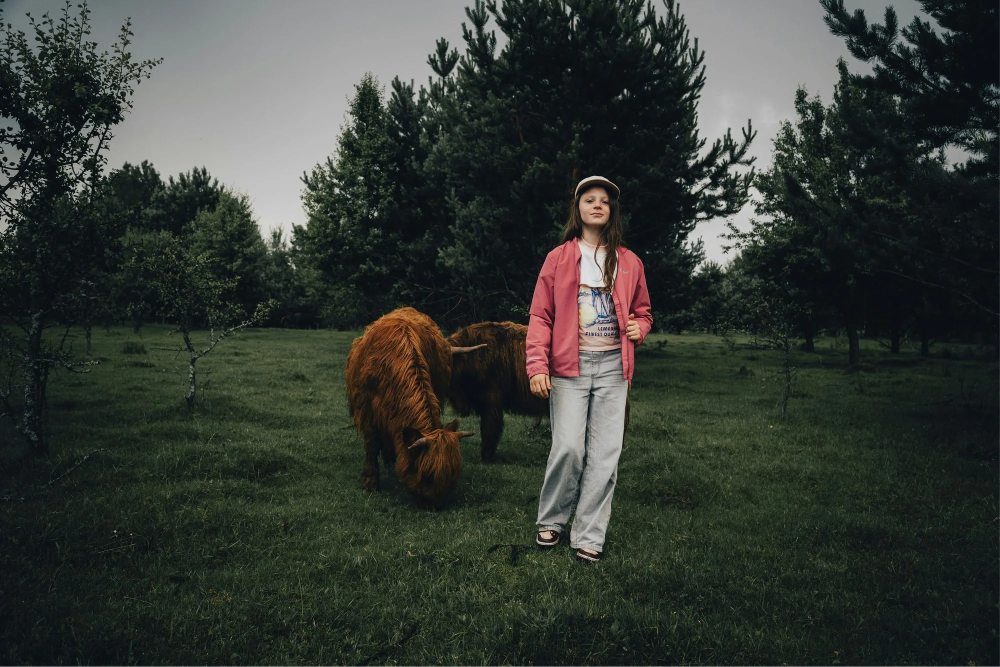
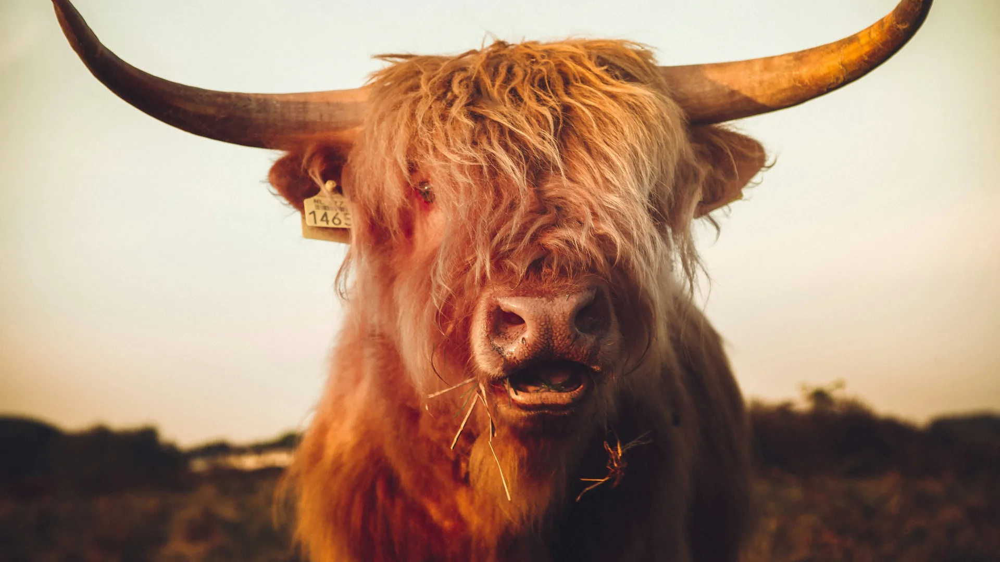
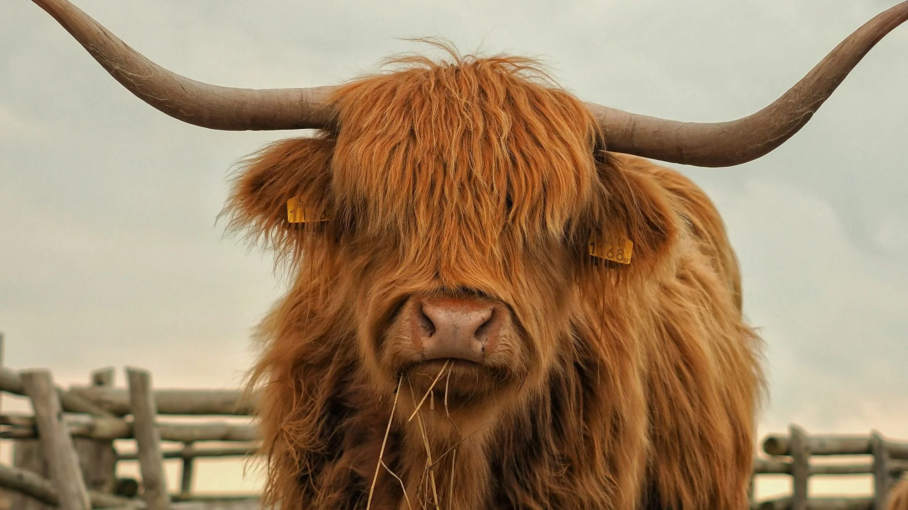
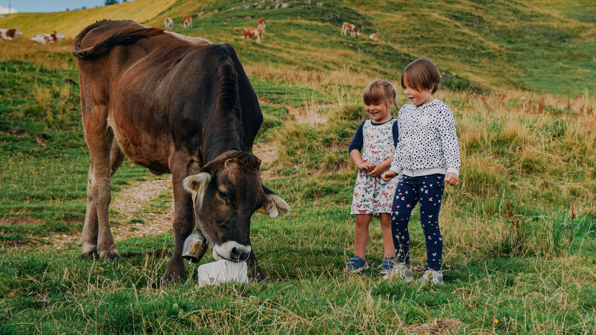
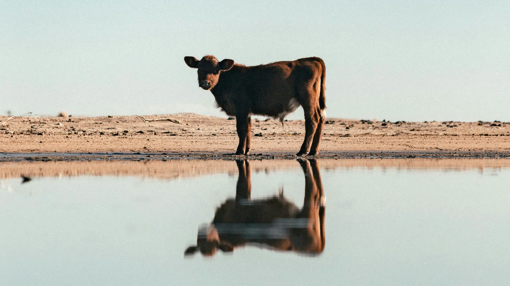

manifest
BŮŮŮH
je dobrý, my jsme normální
církev jako kráva
Kdo jsme?
Jsme lidi. Vaši kamarádi, kolegové a sousedi. Rodina křesťanů z Nového Jičína. Řemeslníci. Umělci. Doktoři. Designéři a tesaři. Ani jeden profesionálně svatý. Ale na vlastní kůži jsme poznali, že Bůh je lepší, než jsme se báli. Proto děláme, co umíme, ať to ochutná i naše okolí.
„My milujeme, neboť on první miloval nás.“
1. Janova 4,19: Bible21
církev jako kráva

manifest
proč?
církev jako kráva
Proč kráva?
Dobrá zpráva
Češi nejsou ovce. Potřebují církev jako kráva.
Ptali jsme se, jak můžeme proříznout českou náboženskou šeď. Nabídnout čerstvý pohled na Krista, který bourá zeď předsudků a nedůvěry. Pak přišla něžně šokující zpráva. Chcete vidět změnu? Buďte fialová kráva.
Pane. To má být vtip? Bože. Vážně cituješ Setha Godina? A pak nám to došlo. Kráva je Boží! Jo. Je to sice divný název pro církev. Ale bez mrknutí oka nás teleportuje do přítomnosti.
„Nevzpomínejte na věci minulé, o starých neuvažujte! Hle, já činím novou věc, a klíčí právě teď – vy to nevíte?“
Izaiáš 43,18–19: Bible21
Minulost je past. Přítomnost je pastva.
Jasně. Jsme Češi. Církev je pro nás minulost. Uzavřená. Prostě past. Ale kráva? Je nadčasová. Normální. Odzbrojující. Lokální. Kde se pase kráva, na církev nikdo nenadává. Vtahuje nás do děje. Smějeme se → jsme zvědaví → ptáme se:
Proč jako kráva?
Jednoduše. Kráva patří na pastvu, ne do kostela. Žijeme tím, čím žije naše město. Fandíme všemu, co v něm Bůh dělá. Přidáváme se, ať to s námi roste. Tam, kde pracujeme a platíme nájem. Dáváme srdce, čas a neředěný zájem.
Lásko, to je Kravařsko!
Kráva je tu domácí. Patří do krajiny stejně jako tráva. Přežvýká jetel, bodláčí i plevel. A pak přijde zázrak. Kráva se rozdává. Vrací zpátky víc, než si bere. Mléko. Smetanu. Telata. Dokonce i kravince jsou baterie pro půdní bakterie. Pastva pulzuje. Kráva ji kultivuje. Prospívá životu. Na každém kroku přidává hodnotu.
Kráva je úkaz. Dokud je tu, laskavě připomíná světu, že náš Hospodář je blízko. Kdyby odsud zmizela, tvář Kravařska by se k nepoznání změnila. Takoví chceme být i my.
Církev, která by Kravařsku chyběla.
„Všichni lidé ať znají vaši vlídnost. Pán je blízko.“
Filipským 4,5: Bible21
Co to znamená?
církev jako kráva
Co děláme?
Oslavujeme Boží náturu, kreativitu a lásku → mezi lidmi na Kravařsku.
Co (kdo) je na Kravařsku tvoje srdcovka a proč?
církev jako kráva
Kuhländchen.
Lásko, to je Kravařsko!
Herzenssache.
Jak to děláme?
Vnímáme, co Bůh kolem dělá. Přidáváme k tomu naše srdce, slova i ruce.
Jak se přidáváš k Boží práci ve svém sousedství?
církev jako kráva
Kuhländchen.
Ich bin ein Kuhländler
Je Kravařsko i tvoje srdeční záležitost?
Herzenssache.
Pro koho?
Tvoříme pastvu pro oči, uši a duši. Pro publikum, co kostel ani víru neřeší.
Jakou pastvu tvoříš? Kdo (co) na ní roste?
církev jako kráva

pastva
krávamá Boží design
církev jako kráva
Proč to děláme?
Aby lidé poznali, že Bohu na nich záleží. Uprostřed komunity, kam patříš i ty.
Prožívají lidé Boží dotek v srdci komunity, kterou tvoříš i ty?
církev jako kráva

plnotučná
kultura100% živá
církev jako kráva
kultura
Hodnoty ladí náš srdeční kompas. Vrací nás na cestu, když ve spěchu a únavě zabloudíme. Tvoří a chrání kulturu pastvy. Přežvykujeme, dokud je nevstřebáme celé. Od pondělí do neděle. V práci, doma i ve škole. Nejen v kostele. Jinak jsou to jen krásné kecy na motivační cedule.
církev jako kráva
kultura 1/10
otevřenápřitažlivě
církev jako kráva
kultura 2/10
srozumitelnápronikavě
církev jako kráva
kultura 3/10
štědrábytostně
církev jako kráva
kultura 4/10
tvořivánespoutaně
církev jako kráva
kultura 5/10
zdravávnitřně
církev jako kráva
kultura 6/10
radostnáhluboce
církev jako kráva
kultura 7/10
odvážnáradikálně
církev jako kráva
kultura 8/10
blízkádůvěrně
církev jako kráva
kultura 9/10
opravdovápřirozeně
církev jako kráva
kultura 10/10
jednoduchánadpřirozeně
církev jako kráva

Co odráží naše životy?
zrcadlo
Podobá se realita našeho života tomu, co říkáme?
církev jako kráva